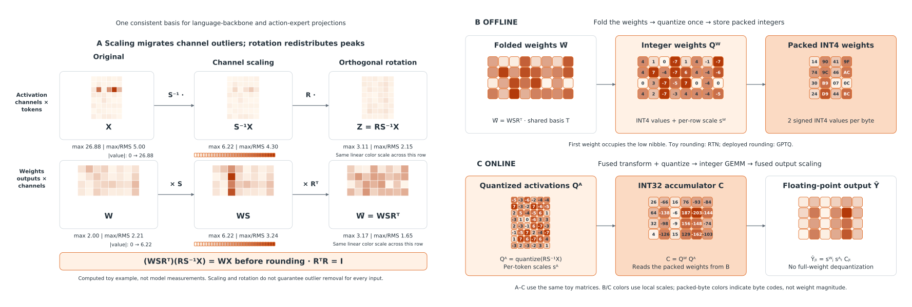

Consistent by construction
Every projection sharing an activation site uses the same transform. Calibration, exported weights, and runtime stay in the same coordinates.
{{subtitle}}
{{speedup}}×
150 → 125 ms per observation-to-action chunk.
GR00T N1.6 · W4A4 vs compiled BF16 · batch 1
{{compression}}×
5,325 → 2,525 MB of serialized engines.
Same Jetson configuration; not peak GPU memory.
{{episode_count}}
{{campaign_count}} LIBERO campaigns × 800 episodes.
{{comparison_count}} reference comparisons across six checkpoints.
{{stable_comparison_count}}/{{comparison_count}}
Comparisons without a statistically detected drop after Holm correction.
Non-detection does not establish equivalence.
Closed-loop benchmark · LIBERO
Across 800 episodes per configuration, FoldQuantVLA W4A4 remains close to its checkpoint-specific BF16 reference on GR00T N1.7 and π₀.₅.
The comparison uses task-clustered testing with Holm correction. DuQuant W4A4 and HoloQVLA W4A4 slots are reserved for the matched evaluation now in progress.
Current evidence. Success values come from Table V. Median action cosine is the P2 decoded-action cosine against BF16 PyTorch over 32 held-out mid-trajectory observations (Table VI). Pending rows do not enter the 53 reported comparisons or the 47,200-episode total.
LIBERO · four suites · 40 tasks · 800 episodes per configuration · H100 MIG 3g.40gb
H is the action chunk length and K the executed prefix (Table I). BF16 is reported both in PyTorch and as the floating-point TensorRT export; FoldQuant arms run on TensorRT. SR is closed-loop success against each checkpoint’s own BF16 PyTorch reference. Median cosine is P2 decoded-action cosine against BF16 PyTorch. Res INT8 keeps the residual-writing o_proj and down_proj at INT8 within the W4A4 arm; it was evaluated on GR00T N1.6 only. Red cells mark detected W4A4 losses.
{{campaign_count}} of {{campaign_count}} campaigns
H100 closed-loop runs use an INT8 datapath with nibble extension for W4A4. Native INT4 execution is measured on sm89 desktop and sm87 Jetson hardware. Statistical non-separation is not evidence of equivalence.
Overview
What does lower precision actually buy a robot policy?
FoldQuantVLA fixes a shared change of basis at each activation site, folds it into weights and normalization gains, and rounds once. A common build path produces floating-point, eight-bit, and four-bit engines for the language backbone and iterative action expert.
We evaluate the resulting engines with compiled floating-point controls and 59 closed-loop LIBERO campaigns. The controls separate deployment speedups from precision gains; the rollouts show where offline action fidelity stops predicting task success.
Every projection sharing an activation site uses the same transform. Calibration, exported weights, and runtime stay in the same coordinates.
Custom TensorRT plugins fuse activation transforms and quantization with integer tensor-core GEMMs on desktop and Jetson GPUs.
Compiled controls, device measurements, and closed-loop outcomes reveal both the gains and the configurations that fail.
Method
One transform per activation site. One engine for the denoising loop.

Scaling and rotation define the coordinates once. Every consumer of the activation must agree on that basis before rounding.
Language and expert projections use W8A8 or W4A4. Vision, attention softmax, residuals, and decoding remain floating point.
Dynamic per-token scaling serves each denoising step. Calibration optimality across steps requires the paper’s stated directional-distribution condition.
Real-world tasks
{{robot_intro}}
Results · Latency
Switch between on-device deployment,
desktop end to end, and the action head.
GR00T N1.6 · batch 1 · observation-to-action chunk
Speedup is relative to the compiled BF16 TensorRT engine on the same device. Engine size is the serialized TensorRT plan, not peak GPU memory.
Six checkpoints · batch 1 · end-to-end median per action chunk
Compiled controls use floating-point TensorRT for GR00T and Evo-1, and torch.compile for π₀.₅ and SmolVLA. Compile share is the part of the eager-to-W4A4 reduction already delivered by compilation. † Uniform W4A4 fails fidelity on SmolVLA. ‡ Evo-1’s 0.5 ms W4A4 regression is below timing resolution. {{desktop_protocol}}
GR00T checkpoints · batch 1 · head-only median
Head-only latency has a different scope and denominator from end-to-end latency; stage medians are not summed into a chunk time. W4A4 + o/d INT8 keeps o_proj and down_proj at INT8 inside the W4A4 arm (Section VI-C, same protocol); “—” marks measurements in progress.
What the controls reveal
The compiled control already supplies 63.2–74.7% of the eager-to-W4A4 reduction on five checkpoints. On SmolVLA, it supplies 99.9%, while uniform W4A4 fails fidelity. Faster execution alone is not a successful deployment.
Table II · matched-scope latency controls
Packed weights shrink the serialized artifact. Vision, unquantized operators, workspaces, and runtime context still occupy memory. The 2.11× Jetson artifact reduction is not a claim about peak GPU memory or power use.
Table III · serialized TensorRT plan sizes
After removing the three arms below 0.99 action cosine, the remaining 26 arms span success differences from −20 to +15 episodes with no significant rank correlation. High cosine can screen a broken configuration without ranking the working ones.
Section VI-D · held-out and closed-loop analysis
32 seeded observations on H100 MIG, with a BF16 reference and a floating-point export control.
32 mid-trajectory observations on RTX 4070 Ti SUPER, disjoint from the 128-observation calibration set.
59 campaigns, each with 40 tasks × 20 initial states. K specifies how many actions execute before replanning.
P1 and P2 cosine values use different observations and accumulation, and must not be merged. LIBERO measures in-distribution task success; these results do not establish real-robot robustness, power savings, or sustained thermal behavior.
Citation
Anonymous manuscript · 2026
{{bibtex}}